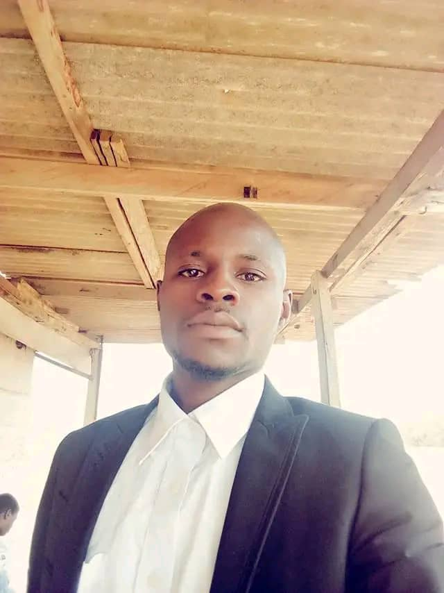

OBAFEMI JOSEPH BABATUNDE

ADDRESS
Nos 156, Egbe garage Opposite general hospital Omu-Aran kwara state.
Career Objective
Dedicated and accomplished web-developer passionate about academic development,
to make a positive impact on clients, co-workers,
and the Internet using my skills and experience to design
compelling,responsive and attractive websites.
Core Qualification
- Bsc Geology, Kogi State University, Anyigba.(2016)
- Nigerian Association of Petrolium Explorationists, NAPE (2016)
- International Institute Of Project And Safety Management. Associate,IIPSM (2018)
- Certified Web Professional- Web Design: Wordpress, Html/Css/Javascript proficiency. Appclick Ict Academy, Ibadan (2024)
Work Experience
Front-end Developer: Appclick ICT Academy, Ibadan
November 2021- Till Date
ROLES:
- Designing web page layout using Wordpress.
- Web Domain Registration.
- Conducting Website Testing.
- Conseptualize Design Ideas.
- Creating Responsive Web pages using Html,Css and Javascript.
- Updating Websites.
- I collaborate with UI/UX designer to create web interface.
- Collaborate with other web developers and sharing ideas about projects.
WEB DESIGNER: NAIJA DIGITAL HUB
November 2018-September 2020
ROLES:
- Designed and developed visually appealing and intuitive websites for clients across various industries.
- Translate Clients requirements and branding guidelines into engaging web designs.
- Utilize Adobe Creative Suites (Photoshop, Illustrator XD) and other design tools to create mockups and prototypes.
SKILLS
- Web Design: adobe creative suites(Photoshop, Illustrator,Adobe XD)
- Front end Development: HTML, CSS, javascript and wordpress
- Copywriter:Professional Email Copywriter.
- Communication Skills, verbal and written
- Entrepreneural Skills
STRENTH
Web Design
Expert in using tools like Wordpress and Sketch to design web pages with excellent UI and UX.Web Development
Proficient in front-end web development, able to build static landing pages in a day or two using ReactJS and CSS.-
Conversion Rate Optimization
Skilled in identifying conversion rate opportunities, improving page copy, and strategizing flows, leading to an increase in conversion rates.